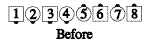
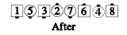
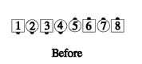
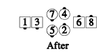

From any appropriate formation: The dancers specified, who needn't be together, act as though they had slid together, done the call, then slid apart. If the call changes the formation, stay near the original centers' spots. Dancers adjust to close up any gaps that were created (as in the Disconnected Crossfire, below).
For example: Girls Disconnected Cross Roll to a Wave:
 
For example: Girls, Disconnected Crossfire:
 
Common applications include Swing Thru, Mix, Switch the Wave, Cross Roll to a Wave, and Crossfire.
© Copyright 1983, 1986-1988, 1995-2011 Bill Davis, John Sybalsky and CALLERLAB Inc., The International Association of Square Dance Callers. Permission to reprint, republish, and create derivative works without royalty is hereby granted, provided this notice appears. Publication on the Internet of derivative works without royalty is hereby granted provided this notice appears. Permission to quote parts or all of this document without royalty is hereby granted, provided this notice is included. Information contained herein shall not be changed nor revised in any derivation or publication.